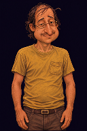
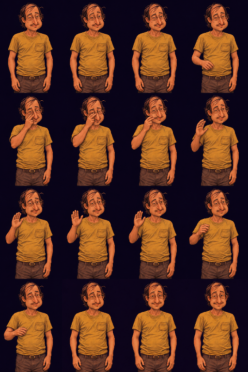

He notices the camera, adjusts his glasses, gives a small shy open-hand wave, then settles with a friendly smile toward the viewer.

Loops here for review. Not yet integrated into the game.
Animated GIF · Imagegen prompt · Timing
